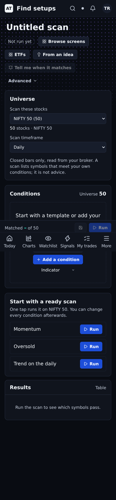
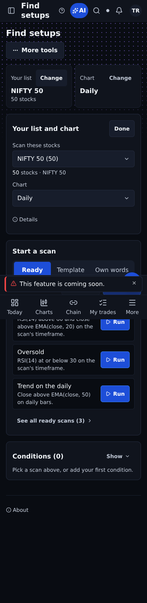
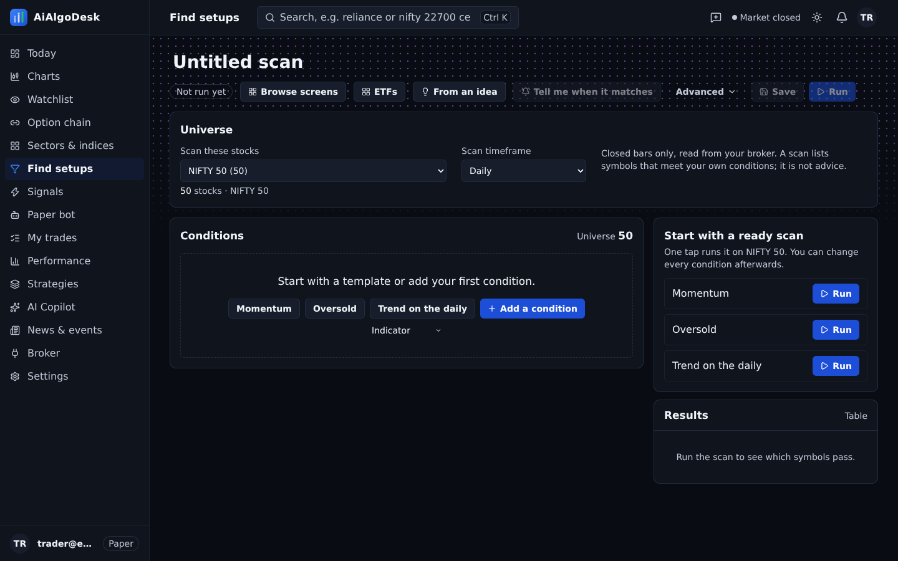
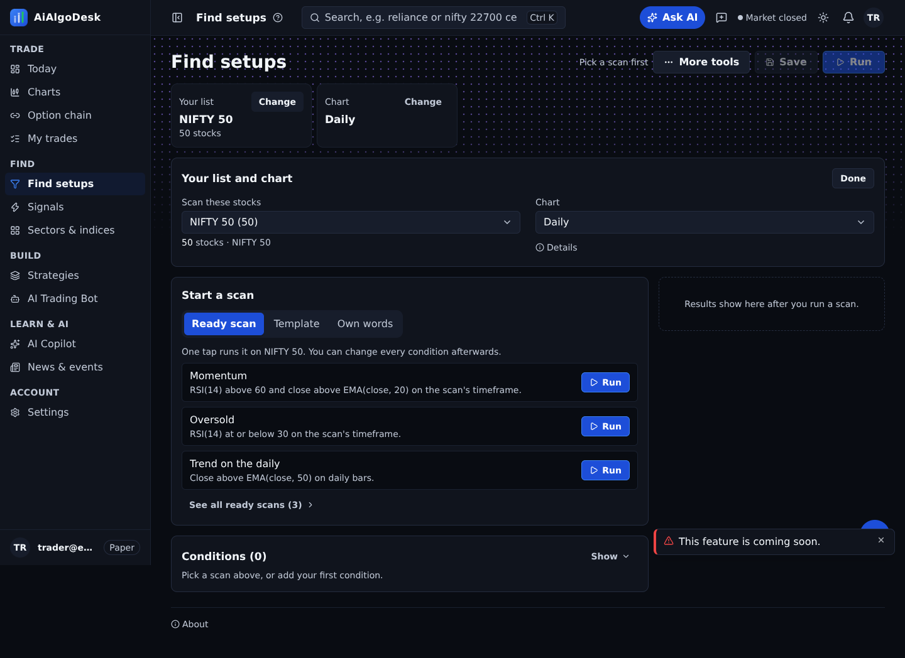
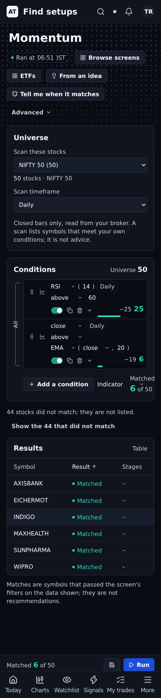
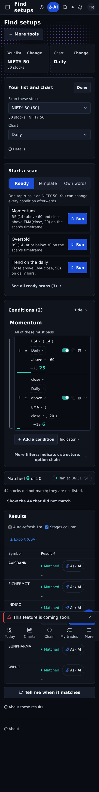
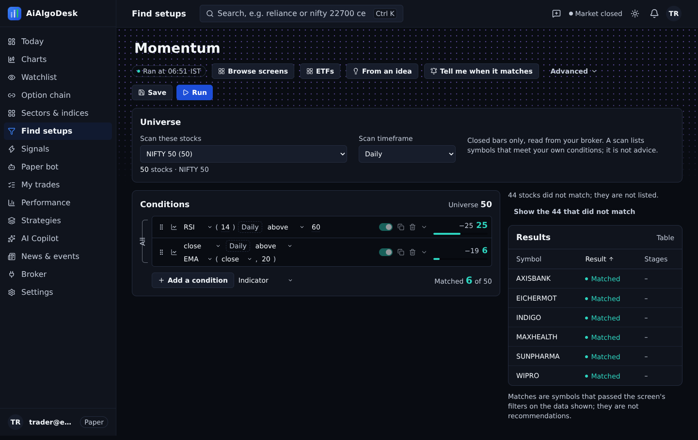
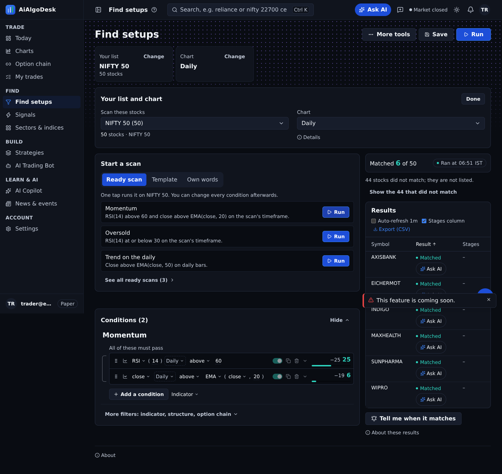

SCR-FIX: Find setups, BEFORE (4077242a3) vs AFTER (origin/main), dark theme, same mocked data
Find setups on open (ready scans, plain timeframe), 390px
BEFORE: Find setups on open (ready scans, plain timeframe), 390px
AFTER: Find setups on open (ready scans, plain timeframe), 390px
Find setups on open (ready scans, plain timeframe), 1440px
BEFORE: Find setups on open (ready scans, plain timeframe), 1440px
AFTER: Find setups on open (ready scans, plain timeframe), 1440px
After a scan runs: matches shown first, 390px
BEFORE: After a scan runs: matches shown first, 390px
AFTER: After a scan runs: matches shown first, 390px
After a scan runs: matches shown first, 1440px
BEFORE: After a scan runs: matches shown first, 1440px
AFTER: After a scan runs: matches shown first, 1440px